STA1000 - Data Analytics and Metrics
Lecture 4 gave you five principles: honest axes, easy reading, restraint, colour that means something, details that are right. Those keep a chart from being wrong.
They do not make it land. You have views that answer your questions; a client has different questions, and about ninety seconds of attention.
By the end of this lecture you will be able to:
A chart succeeds when it raises the next question. “I wonder why that is” is the sound of someone accepting the fact and moving to the explanation.
Charts rarely settle an argument on their own. If a chart will not settle it, what is it for?
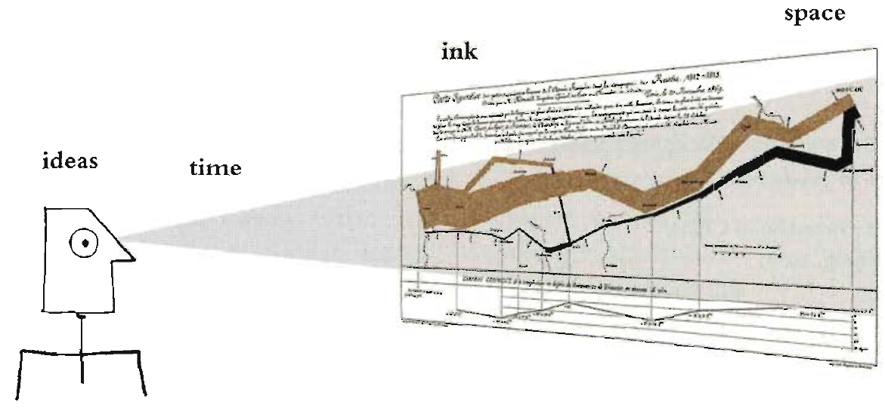
Ideas, ink, space, time. A good chart spends the least ink on the fewest ideas that carry the point.
The same small dataset can be drawn a hundred different ways, each emphasising a different comparison.
One shows change over time within a country. One shows the ranking at a single date. One shows regional grouping. One shows one country overtaking another.
None of them is dishonest. They answer different questions. The choice of which comparison to foreground is the analyst’s, and it is rarely visible to the audience.
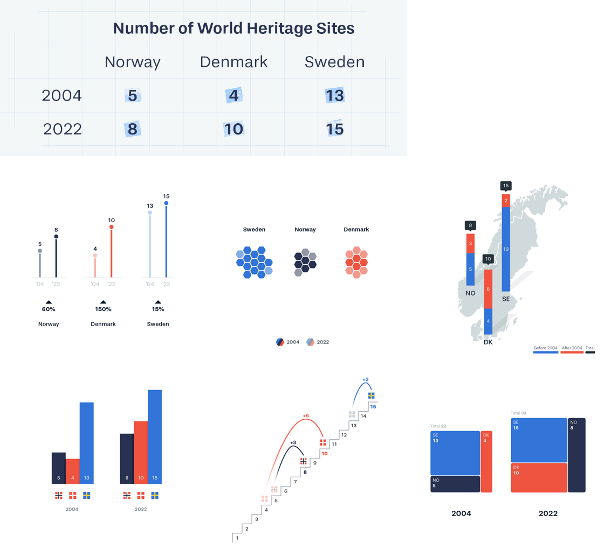
World Heritage sites in three countries, 2004 and 2022. Each chart makes a different comparison easy and the others hard.
Graphics journalists work to a hard rule: one chart, one point, obvious how to read it.
In practice, most good charts say one of four things:
Scientific and analyst charts are often the opposite: four variables, six symbols, and the explanation two pages away.
Take the chart you brought. Which of the four points does it make? If it makes two, which one loses?
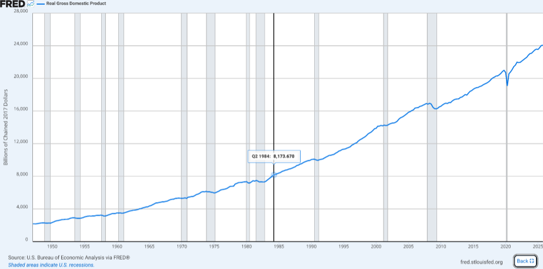
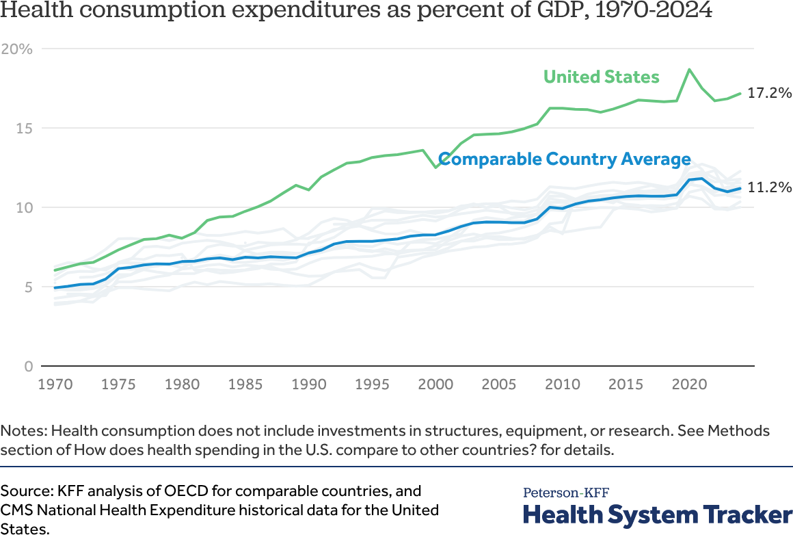
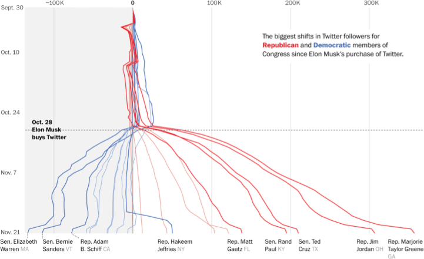
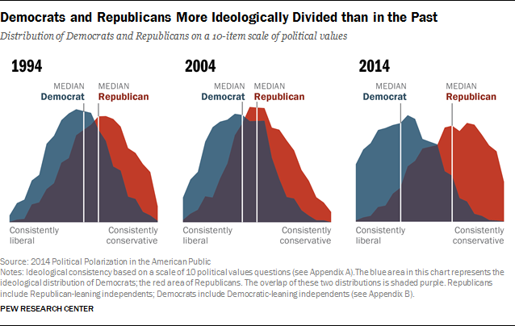
Number goes up, lines diverge, something happened, the distribution is bimodal. Jeremy Merrill, Washington Post, via MGT 100 Customer Analytics, UC San Diego (CC BY 4.0)
These are not the same chart with different formatting. They are usually different charts, and the analyst’s chart is the one that produced the client’s.
Analyst title
“Sessions by source / medium, weekly, 2026-01 to 2026-03”
Describes the fields.
Client title
“Referral traffic has replaced search as our main source since February”
States the finding.
If you cannot write the second title, you have not finished the analysis. The chart is not the deliverable, the sentence is.
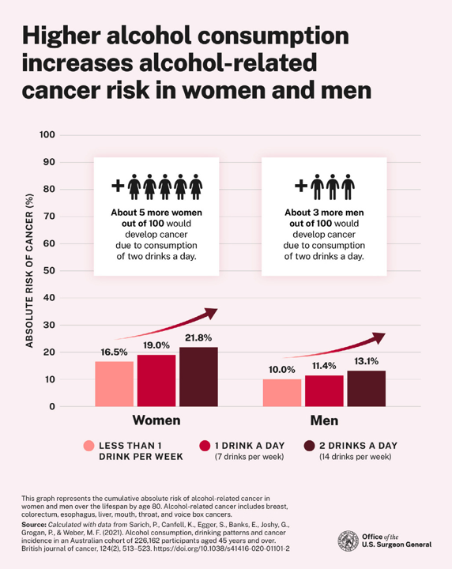
You know the finding before you have read a single axis label.
Cleveland and McGill established, experimentally, how accurately people read quantities from different visual channels. Best to worst:
Everything above the line in a good chart is doing its work with the top three.
A pie chart encodes quantity as angle and area, positions four and five. What does it buy in exchange for that cost, and when is the trade worth it?
| Question | Chart |
|---|---|
| How has it changed? | Line |
| How do categories compare? | Bar, sorted by value not alphabetically |
| What is the distribution? | Histogram, or box plot for comparisons |
| What is the composition? | Stacked bar, rarely a pie |
| Where does it drop off? | Funnel, with counts at every step |
| Is there a relationship? | Scatter, with the n stated |
Start from the question, not from the chart menu. Tableau’s Show Me panel inverts that order, which is why it is so easy to produce a beautiful chart of nothing.
Tufte’s principle: maximise the share of ink that represents data.
Remove, in this order: 3D effects, background fills, heavy gridlines, borders, redundant legends, decorative images, drop shadows.
Add back only what a reader needs to decode the chart. The test is subtraction: delete an element and see whether the chart still works.
Default
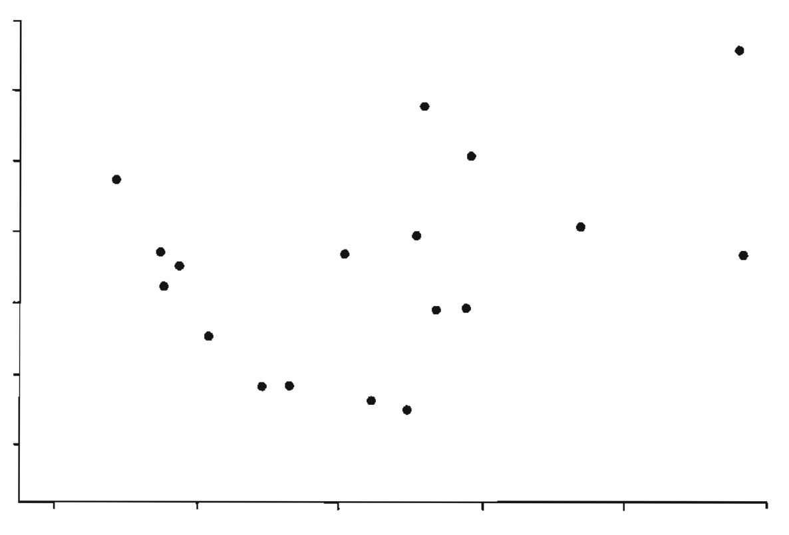
Same data, less ink
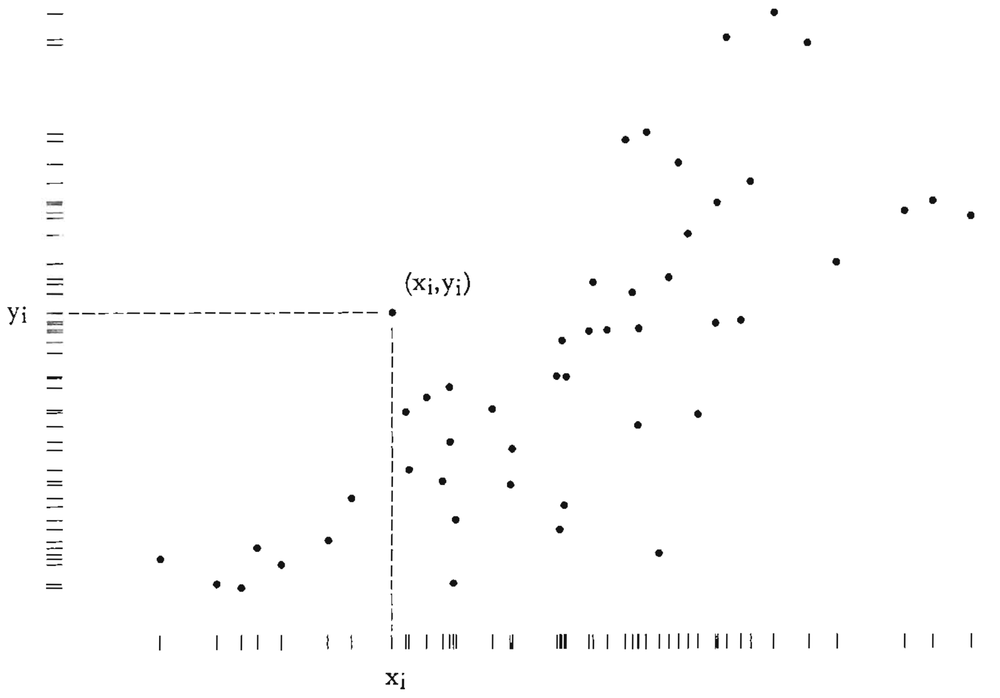
The right-hand version deletes the frame and spends the freed ink on the marginal distributions. Nothing was lost.
The 1980s version was 3D bars and a picture of a duck. The current version is subtler:
Every element on a dashboard competes for attention with every other. That is the cost, and it is paid by the reader.
A building shaped like a duck
A chart shaped like a duck
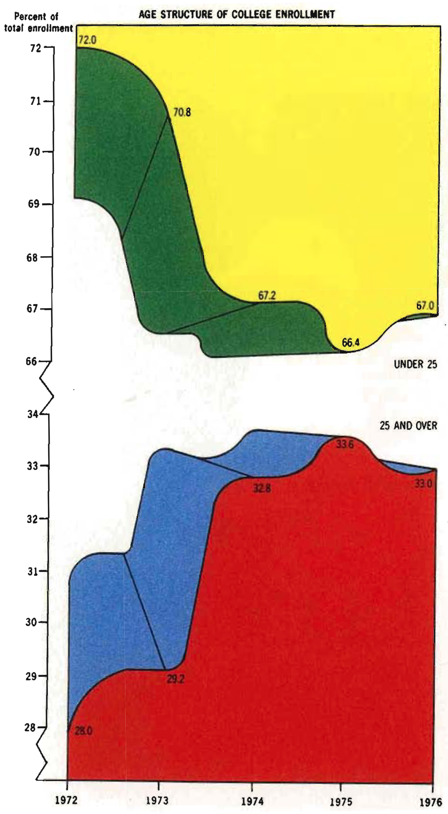
Tufte’s term. When the decoration becomes the structure, the chart is the duck.
A misleading chart can indicate bad faith. Two goals here: not being misread, and spotting when someone else is misleading you.
Rule 1 has a genuine exception: a series where the interesting variation is 2% of the level. How do you take the exception honestly?
As published
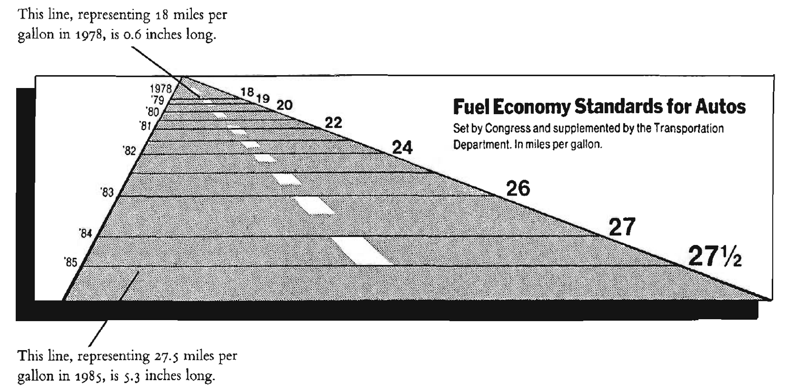
As it should have been
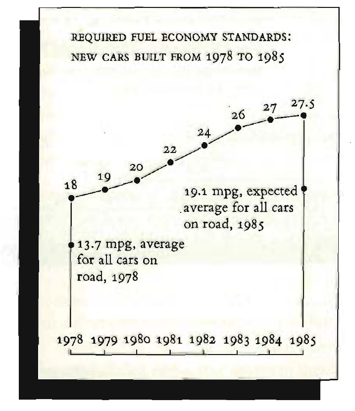
A 53% increase in fuel economy standards drawn as a 783% increase in line length. The redraw uses the same numbers.
Two real dashboards on screen: the GA4 default home, and one agency or Looker Studio gallery template.
For each, as a room:
In pairs:
25 minutes
Where we are on the module’s AI spine, set out in Lecture 1 and named properly in Lecture 12:
Chat with context
Screenshot critique is one of the strongest uses of a multimodal assistant, because the encoding rules are explicit, well documented and heavily written about.
“Here is a chart from my dashboard [screenshot]. Critique it against the Cleveland and McGill ranking of visual channels. Say specifically what a non-technical client would misread, and what they would conclude that the data does not support.”
The last clause matters. “Critique this chart” gets you a list of tidying. “What would they wrongly conclude” gets you the failure.
“Rewrite this chart title as a finding rather than a field name. Give me three versions at different levels of confidence.”
“What would a CFO ask when they see this? What would a marketing manager ask? Which of those questions can this chart answer?”
The three-confidence-levels trick is useful because it forces you to choose how strong a claim your data supports, rather than defaulting to the strongest phrasing that sounds fine.
It will make your chart prettier and more conventional. Under what circumstances is “more conventional” the wrong direction?
15 minutes
Block 3 begins. We move to Python for the analyses Tableau makes awkward, and we stop and name what we are doing with AI.
Prepare: nothing to build. Come with the question about AI you have been not asking.